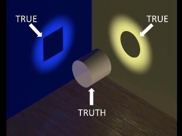

--Tom Thompson
Today a Loves-Trump friend got curious and left Fox News to check out what another news network showed. She was horrified. How negative the not-Fox station was about Trump, how they featured only stories that made him look bad, how shockingly they were biased against him!
“All they do is lie about Trump! That is not news, that is opinion! You have to be ignorant not to see it. I can’t believe there are so many stupid and gullible people out there! They believe all those obvious lies!” she wrote. (All quotes and exclamation points free of charge.)
All her Loves-Trump friends completely agreed. One recommended another station for more accurate Trump-supporting news.
Meanwhile, a Hates-Trump friend wanders on to Fox to see what stories they're telling, to see how they falsify and pretty up and downright hide any info unless it shows Trump in a wonderful light.
She also sputters with outrage, she also can’t believe people actually believe all those lies, she also generously trots out the exclamation points.
“They misconstrue the story line to fit their narrative! Interjecting their personal opinion! It’s so obviously lies! They believe it! How stupid are they? How can anyone still support this evil man?”
Huh. Loves-Trump folks say the exact same word-for-words as Hates-Trump folks.
Weird.
So who’s right? Who tells the truth?
Friends, you can trust only me. And maybe you, if you agree with me. Duh.
OK, OK, to be more accurate, no one is right. Not me, not you, not the other guys. Not no one.
Yes, I’m sorry. I realize it’s absolutely certain that what you believe is true, and that I am an ignorant idiot for writing such ridiculous nonsense.
I mean, it’s called “Truth,” for goodness’ sake. There’s a right answer. Truth is truth. Somebody’s right.
Although, if anger shows up just from reading these questions, it could be worth wondering why. Why is it so ferociously necessary to know what’s true or who’s right? What is so fragile that it needs that righteously angry f-you snit if it doesn't get agreement?
Anyway, the thing is, the news on any “side” has to be selectively edited and reduced in some way, because there is simply no way the human mind can take in the vast amount of available info.
Data must be made bite-sized so that it can be squeezed into a tidy and manageable human
point of view.
That requires a sieve, a bias, a perspective. News presenters choose info that will pass through their audience's particular does-it-fit-here filter. Everything else is left out or adjusted to fit.
And of course it's not just the news. Every single living moment, humans are eliminating huge tons of data. It can't all be taken in, so all experience must be constantly pushed through a slanted, biased, point-of-view screen. (There’s tons of science about this.)
Which is why we have zero ability to know what's been left out. We have zero ability to know what we don’t know.
Which is how one person can look at Donald Trump and see a successful, powerful, superior-gened hero who gets things done, and another sees the exact same guy as a broke, bloated, corrupt, lying narcissist who ruins everything he touches.
It's not possible to know what's true. About anything.
It's only possible to believe rather than know.
It’s always just beliefs. That’s all we have.
We call them facts but they’re only facts to us and to our similarly-biased team, from within the selective filters. To others, those same "facts" are lies.
“Can you believe xyz happened?” “I don’t believe that news station.” “I can’t believe others don’t see it.” “I believe that’s true.”
Beliefs are not facts. Beliefs are not truth.
Beliefs are faith in the filter. They’re trust in the screened, selected experience.
And beliefs change.
Truth, not so much.
We have nothing without beliefs. Literally nothing.
We're not big fans of nothing. So humans are drawn like flies to beliefs..
Because it’s person-al. Because opinions define us, tell us who and what we are. Because points of view give us verification of self.
So we cling to our perspectives with great urgency. We fight for them, hate others for them, defend, protect, and deify them.
In the name of rightness and “truth.”
We call this ”trusting our own mind.” Of course we have to do that in order to live in this world.
But in actuality we can’t ever really trust it. It’s biased, slanted and completely blind. at all times.
Lucky for us, seeing that we truly don’t know jack--s---about absolutely anything can create a tiny bit of space, a small opening, in the bricked-in wall of belief.
Which can bring an oddly unfamiliar calm. Spaciousness. Peace. Even some clarity.
Truth has a way of doing that.
Of course we always still have our many beliefs and opinions, we still take political action, still choose a side, still pretend to know things.
But knowing that we never ever actually do know “truth” is such a relief.
Which unexpectedly expands, rather than limits, the mind. Paradoxically giving access to something bigger, truer, and less pin-downable.
Which perhaps is something worth believing in.
Or not.
I don't know.
I mean, that’s a story I can believe.
But hey, that would just
be me.
to get your Mind-Tickled every week.
Click here to see Judy on Buddha at the Gas Pump.
Watch Judy and Robert Saltzman chat here.
